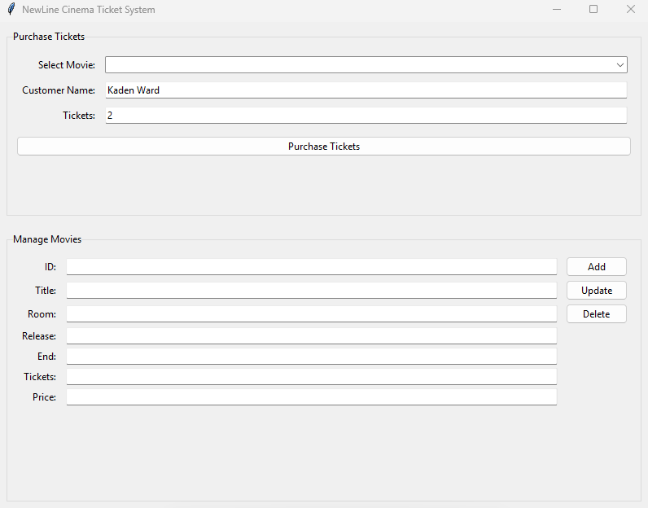
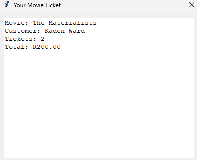

Movie Ticket Booking System
Project Overview
This project is a Python-based movie ticket booking application that uses a client–server system architecture. Users interact with a GUI client, while the server script manages database operations such as ticket sales and client connections. An admin interface allows for adding, deleting, and updating movie details.
Technical Overview
- Python
- Tkinter
- Socket Programming
- Multi-threading
- SQLite Database
- JSON
- Visual Studio Code
- Jupyter Notebook
Source Code
Application Screenshots
Client Script (GUI)

Ticket Receipt
